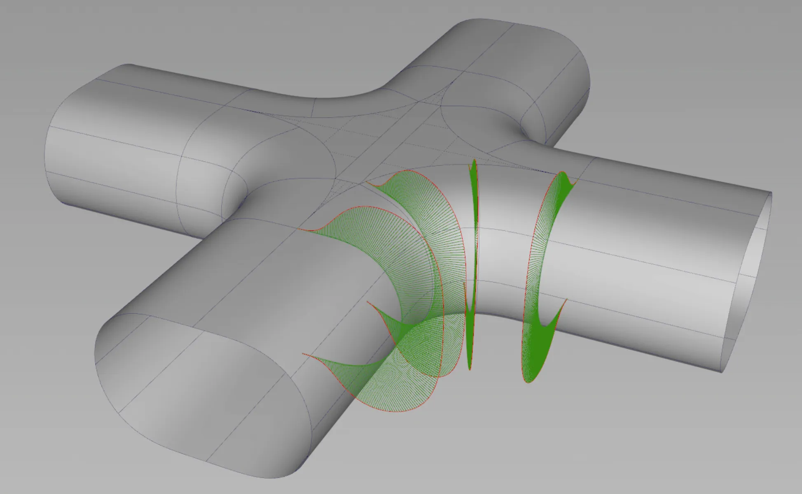
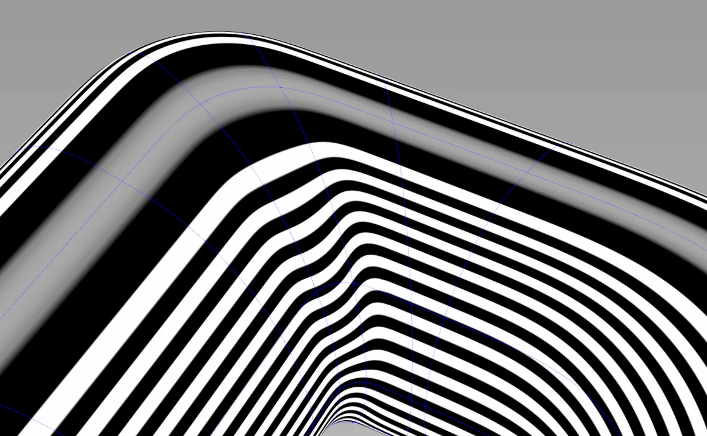
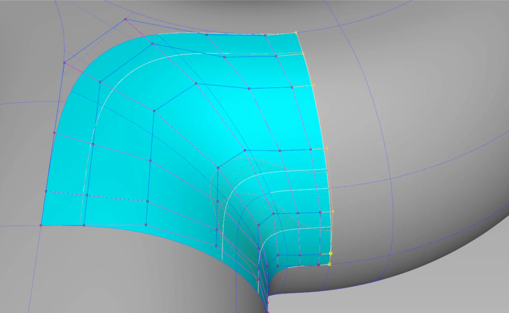
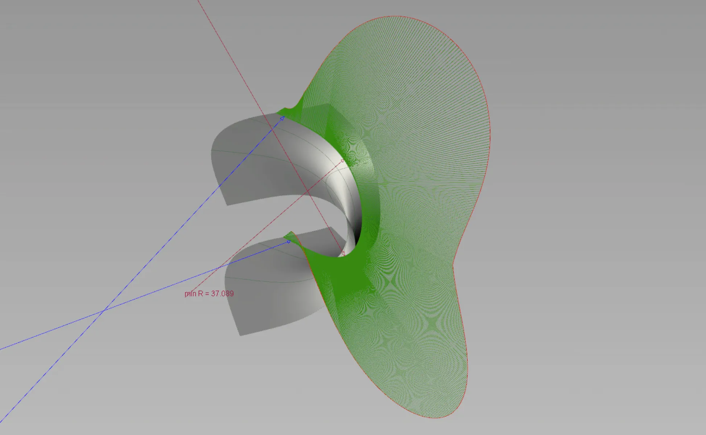
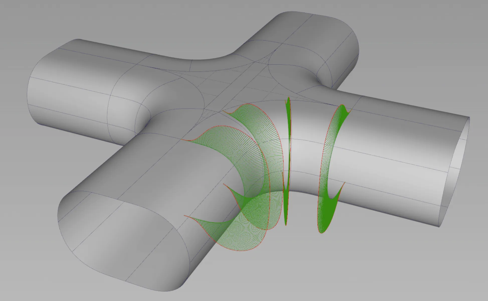
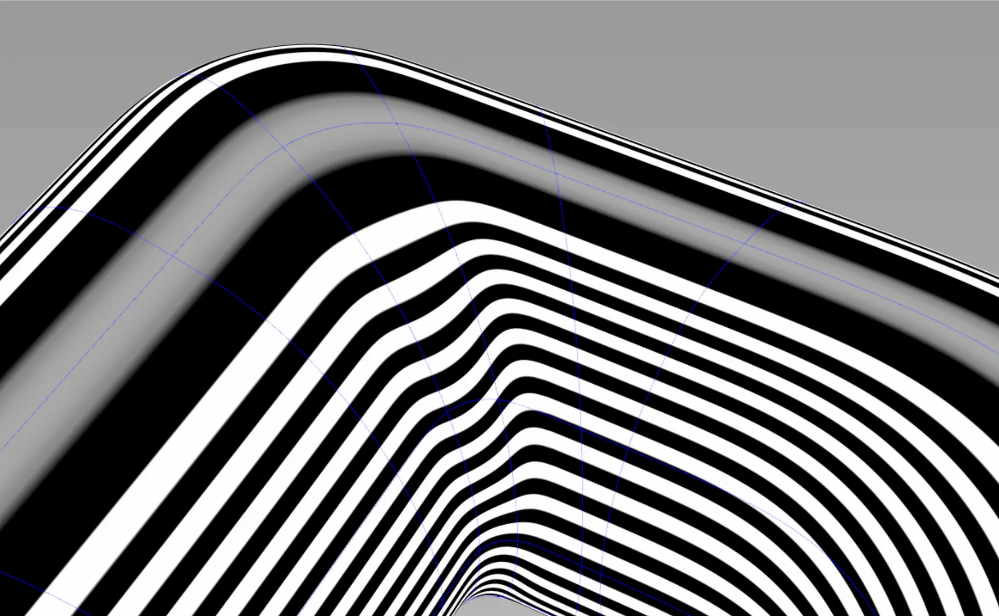
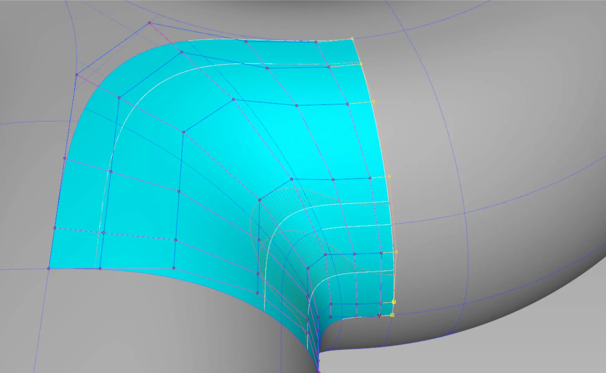
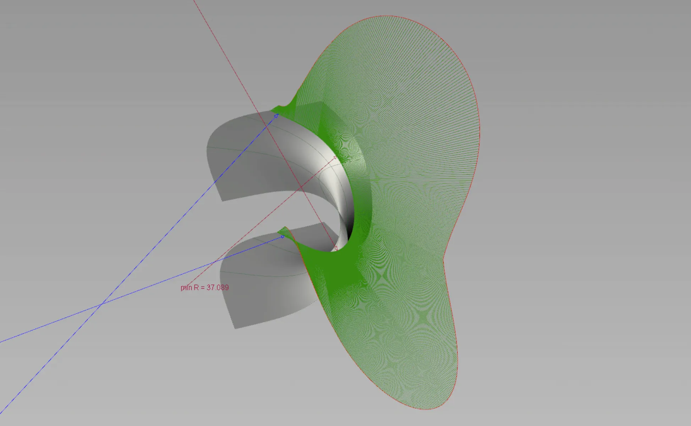

As part of an interview loop, I did this bubble letter of a capital R. I haven't yet solved it without making some major compromises to the surfaces at the intersection of the letter's stems. Perhaps when I have more free time, I will give it another try.
The brief was to model a bubble letter with a circular profile while avoiding flat areas at the intersection and, of course, maintaining perfect continuity and clean geometry. The real challenge is that avoiding flat areas means making some compromises in continuity.
The biggest challenge in this exercise to avoid flat planes in the transition areas where the main pipes of the bubble letter meet. If I were to only aim for G2 continuity and didn't care too much for heavy surfaces, it could work. But what would be the fun in that? While this result looks OK, there is lots I can improve on.
The transition areas are too flat and I went for too much of a pill-shaped profile. If you are willing to teach me the proper techniques, please get in touch.
 







Get in touch